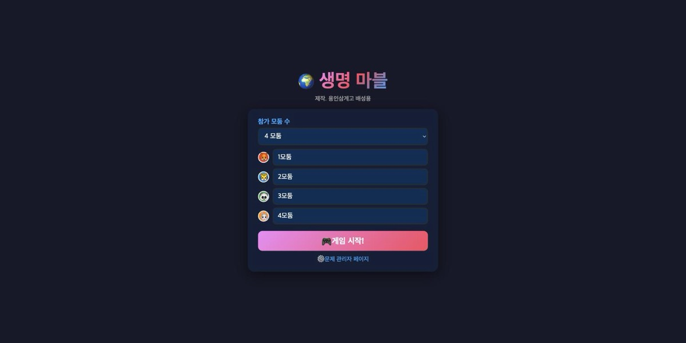
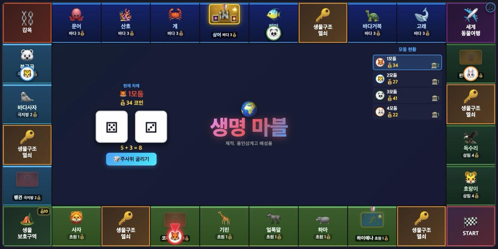
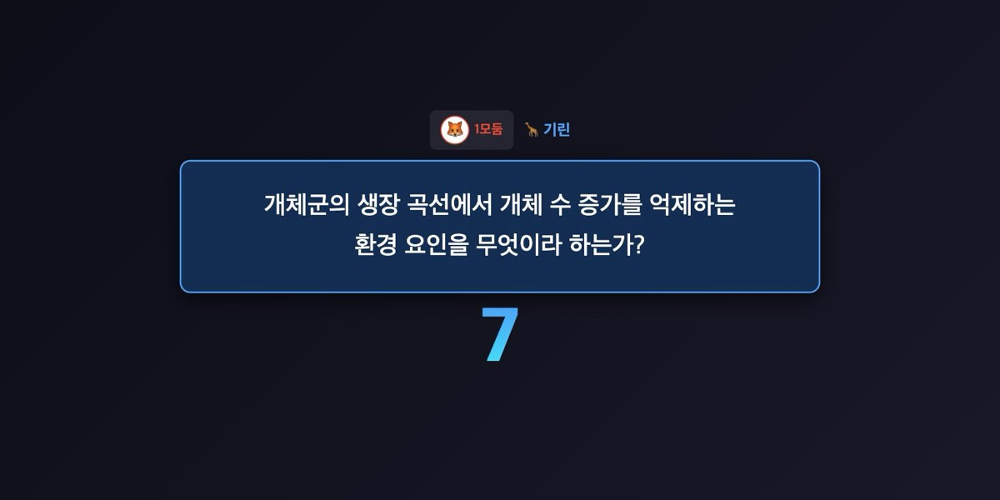
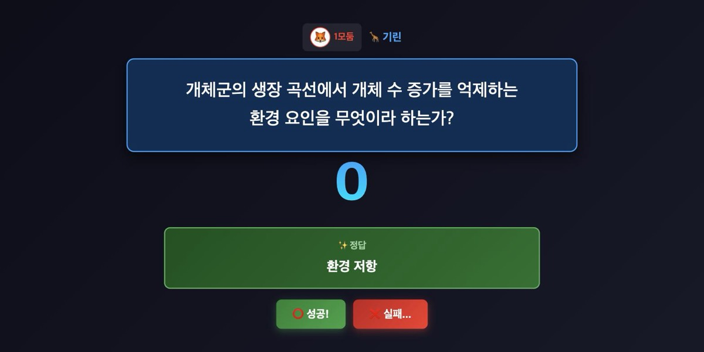
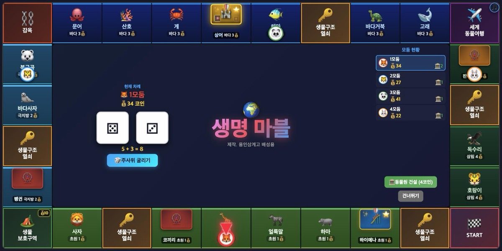
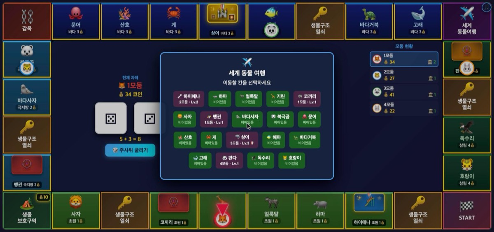
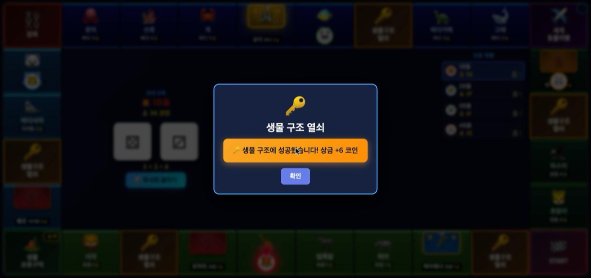
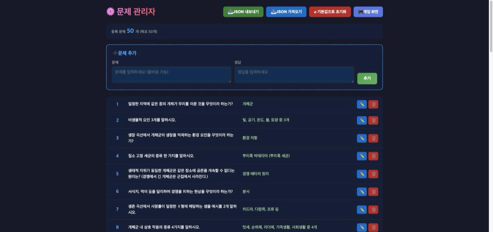

생명과학 개념을 문제로 풀면서 진행하는 부루마블식 보드게임입니다. 학생 기기가 필요 없고, 선생님 노트북 한 대를 TV·빔에 띄워 진행합니다. 이 문서만 따라오면 첫 판을 끝까지 돌릴 수 있습니다.
https://bio-marble.pages.dev/학생 휴대폰·태블릿 필요 없음 — 화면 하나로 진행합니다
30초면 이해됩니다.
이게 전부입니다.
클릭 세 번이면 판이 열립니다.
브라우저에서 https://bio-marble.pages.dev/ 를 엽니다. 설치할 것은 없습니다.
참가 모둠 수를 고르면 그만큼 이름 칸이 생깁니다. 비워 두면 1모둠·2모둠…으로 들어갑니다. 반 이름이나 모둠 이름을 넣으면 화면에 그대로 뜹니다.
규칙 요약 창이 한 번 뜹니다. 학생들과 같이 읽고 🎮 시작하기를 누르면 보드가 나옵니다.

보드에 뭐가 어디 있는지.

| 위치 | 무엇 | 알아둘 것 |
|---|---|---|
| 가장자리 전체 | 보드 28칸 | 오른쪽 아래 🏁 START에서 시계방향으로 돕니다 (아래줄은 왼쪽으로 → 왼쪽줄은 위로 → 윗줄은 오른쪽으로 → 오른쪽줄은 아래로). 칸마다 지역과 세금이 적혀 있습니다 (예: 바다 3💰). |
| 가운데 왼쪽 | 현재 차례 · 주사위 | 지금 누구 차례인지와 코인이 크게 뜹니다. 🎲 주사위 굴리기가 여기 있습니다. |
| 가운데 오른쪽 위 | 모둠 현황 | 모둠별 코인과 동물원 개수(🏛️). 진행 중인 모둠 줄에 파란 테두리가 생깁니다. |
| 가운데 오른쪽 아래 | 행동 버튼 자리 | 지을지 말지, 낼지 말지 같은 선택 버튼이 항상 여기 뜹니다. 화면이 멈춘 것 같으면 이 자리를 보세요. |
| 말 위 | 🔻 빨간 화살표 | 지금 차례인 모둠의 말을 가리킵니다. 커졌다 작아지며 말을 따라 이동합니다. |
| 동물 칸 위쪽 | 🎡🎢🏰 동물원 | 주인 모둠 색으로 칠해집니다. 관람차=Lv.1, 롤러코스터=Lv.2, 성=Lv.3. |
| 🏕️ 생물보호구역 | 💰숫자 배지 | 지금까지 쌓인 기금입니다. 다음에 도착한 모둠이 전액 가져갑니다. |
계속 이것만 반복합니다.
이 게임의 절반이 여기 있습니다.
오른쪽 아래에 ▶️ 기린 문제 시작 처럼 뜹니다. 모둠이 준비되면 누르세요. 누르기 전까지는 기다립니다 — 설명할 시간이 필요하면 여기서 멈춰도 됩니다.
화면 전체에 숫자가 크게 뜹니다.
문제가 전체 화면으로 뜨고 10초가 내려갑니다. 마지막 3초에 숫자가 빨개지고 소리가 납니다.

10초가 끝나도 정답이 자동으로 뜨지 않습니다. 선생님이 눌러야 나옵니다. 모둠 답을 다 들은 뒤에 누르세요.
정답이 뜨면 ⭕ 성공! ❌ 실패… 중에 선생님이 고릅니다. 부분 정답을 인정할지는 선생님 재량입니다.

코인이 오가는 부분. 외울 필요 없이 화면에 뜨는 숫자를 읽으면 됩니다.
문제를 푼 뒤 🏛️ 동물원 건설 (4코인) 처럼 가격이 적힌 버튼이 뜹니다. 건너뛰기를 눌러 안 지어도 됩니다.

건설비 = 지역 세금 + 레벨 비용입니다. 문제를 틀리면 지역 세금만 2배가 됩니다.
| 지역 | 🎡 Lv.1 짓기 | 🎢 Lv.2 | 🏰 Lv.3 |
|---|---|---|---|
| 초원 (세금 1) | 4 / 5 | 5 / 6 | 6 / 7 |
| 극지방 (세금 2) | 5 / 7 | 6 / 8 | 7 / 9 |
| 바다 (세금 3) | 6 / 9 | 7 / 10 | 8 / 11 |
| 삼림 (세금 4) | 7 / 11 | 8 / 12 | 9 / 13 |
이미 내 동물원이 있는 칸에 다시 멈추면 레벨 업그레이드를 할 수 있습니다. Lv.1 → Lv.2 → Lv.3, 모든 레벨에 문제가 붙습니다. Lv.3(🏰 성)은 무적 — 열쇠 카드로도 뺏기지 않습니다.
문제를 먼저 풀고, 그 결과에 따라 낼 금액이 정해집니다. 관람비 = (지역 세금 + 2) × 레벨 배수, 틀리면 +3코인이 붙습니다.
| 지역 | Lv.1 ×1 | Lv.2 ×2 | Lv.3 ×3 |
|---|---|---|---|
| 초원 | 3 / 6 | 6 / 9 | 9 / 12 |
| 극지방 | 4 / 7 | 8 / 11 | 12 / 15 |
| 바다 | 5 / 8 | 10 / 13 | 15 / 18 |
| 삼림 | 6 / 9 | 12 / 15 | 18 / 21 |
동물 칸이 아닌 칸들.
| 칸 | 멈추면 |
|---|---|
| 🏁 START | 지나가면 +5코인, 정확히 도착하면 +7코인. |
| 🏕️ 생물보호구역 | 기금이 비었으면 5코인을 냅니다(적립). 기금이 쌓여 있으면 전액 가져갑니다(0으로 초기화). 타일 오른쪽 위 💰배지에 현재 액수가 보입니다. |
| ⛓️ 감옥 | 도착하면 2턴 정지. 쉬는 턴마다 세 가지 중 고릅니다 — 3코인 내고 즉시 탈출 / 주사위를 굴려 더블이면 탈출 후 그만큼 이동 / 그냥 대기. |
| ✈️ 세계동물여행 | 동물 칸 아무 데나 골라 즉시 이동합니다. 가는 길에 START를 지나면 +5코인. 도착한 칸의 효과(문제·관람비 등)는 그대로 발동합니다. |
| 🔑 생물구조열쇠 | 14종 카드 중 하나가 무작위로 뽑힙니다. 아래 8번 참고. |

🔑 칸에서 무작위로 한 장. 판이 뒤집히는 자리입니다.

| 카드 | 장수 | 효과 |
|---|---|---|
| 상금 | 4 | +2 / +4 / +6 / +8 코인 |
| 벌금 | 2 | −2 / −4 코인 |
| 원하는 곳으로 이동 | 1 | 동물 칸 아무 데나. START 지나면 +5코인 |
| 상대 동물원 가로채기 | 1 | Lv.3 제외한 남의 동물원 1개를 뺏습니다 |
| 동물원 교체 | 1 | 내 동물원 1개와 남의 것 1개를 맞바꿉니다 |
| 상대 동물원 폐쇄 | 1 | Lv.3 제외한 남의 동물원 1개를 없앱니다 |
| 무상 동물원 설립 | 1 | 빈 동물 칸에 공짜로 Lv.1을 짓습니다 (문제 없음) |
| 주사위 두 번 | 1 | 다음 턴에 한 번 더 굴립니다 |
| 다른 팀 감옥 보내기 | 1 | 모둠 하나를 골라 감옥으로 보냅니다 (2턴 정지) |
| 다른 팀과 코인 교환 | 1 | 모둠을 고르면 코인 총액을 통째로 맞바꿉니다 |
단원에 맞게 문제를 갈아 끼울 수 있습니다.
시작 화면 아래 ⚙️ 문제 관리자 페이지 를 누르거나,
주소 뒤에 /admin.html 을 붙입니다.
비밀번호는 제작자에게 따로 문의해 주세요. 학생이 정답을 미리 보지 못하게 막아 둔 것이라, 이 문서에는 적어 두지 않았습니다.
학생 앞에서 이 화면을 열지 마세요. 문제와 정답이 목록으로 다 보입니다.
문제와 정답만 넣으면 됩니다. 시간은 10초 고정입니다. 기본 50문제는 그대로 두고 뒤에 덧붙여도 되고, 지우고 새로 채워도 됩니다.

수업 중에 자주 나오는 상황들.
대부분 선생님이 누를 버튼을 기다리는 중입니다. 이 게임은 자동으로 넘어가지 않습니다. 화면 가운데 오른쪽 아래(모둠 현황 밑)를 보세요. 버튼은 항상 거기 뜹니다.
문제 화면이라면 🔓 정답 공개 를 눌러야 다음으로 넘어갑니다. 10초가 지나도 정답은 자동으로 안 뜹니다.
정식 승리 조건은 "마지막 한 모둠"이라 정해진 턴 수가 없습니다. 40~50분 수업이면 대개 결판이 안 납니다.
시작할 때 "종이 치면 코인이 가장 많은 모둠이 우승"이라고 미리 알려 주세요. 모둠 현황에 코인이 계속 떠 있으니 그대로 읽으면 됩니다. 동물원을 가진 모둠에게 가산점을 주는 식으로 변형해도 좋습니다.
🔑 생물구조열쇠의 코인 교환과 동물원 가로채기가 이걸 뒤집는 장치입니다. 열쇠 칸은 보드에 5개 있어서 생각보다 자주 걸립니다.
그래도 벌어지면, 뒤처진 모둠에게 문제 부분 정답을 넉넉하게 인정해 주세요. 판정 권한이 선생님에게 있는 이유이기도 합니다.
되돌리는 버튼은 없습니다. 다만 판정 다음에 뜨는 건설·지불 버튼에서 조정할 수 있습니다. 예를 들어 잘못 "실패"를 눌렀다면 건설을 건너뛰기 하게 하고 다음 턴에 다시 기회를 주는 식입니다.
코인이 크게 틀어졌다면 새로 시작하는 게 빠릅니다 — 판이 짧아서 부담이 적습니다.
진행 상황은 저장되지 않습니다. 새로고침하면 처음부터 시작해야 합니다. 수업 중에는 F5와 브라우저 뒤로 가기를 조심하세요. 전체 화면(F11)으로 띄워 두면 실수로 다른 걸 누를 일이 줄어듭니다.
배경음악은 🎮 게임 시작! 을 눌러야 시작됩니다 (브라우저 자동재생 차단 때문).
그래도 안 나오면 오른쪽 위 🎵 를 눌러 음소거(🔇)가 걸려 있는지, 슬라이더가 0으로 내려가 있는지 확인하세요. 볼륨 설정은 브라우저에 저장돼서 지난번에 0으로 두었으면 그대로 남아 있습니다.
문제는 브라우저별로 저장됩니다. 집 컴퓨터 ≠ 교실 노트북입니다. 9번의 JSON 내보내기 / 가져오기로 옮기세요.
같은 노트북인데도 안 보인다면 시크릿 창이거나 브라우저가 다른 경우입니다 (크롬에서 넣고 엣지에서 열면 안 보입니다).
중간에는 못 바꿉니다. 새로고침해서 다시 시작하세요. 시작 전이면 손해가 없습니다.
인쇄해서 옆에 두고 보세요.
| 시작 코인 | 30개 · 모둠 2~4 |
| 이동 | 주사위 2개 합 · 더블이면 한 번 더 |
| 🏁 START | 통과 +5 · 도착 +7 |
| 🏕️ 보호구역 | 비었으면 −5(적립) · 쌓였으면 전액 획득 |
| ⛓️ 감옥 | 2턴 정지 · 3코인 또는 더블로 탈출 |
| 🐾 동물 칸 | 문제 10초 → 정답 공개 → 선생님이 ⭕/❌ |
| 건설비 | 지역세금 + 레벨비(3/4/5) · 틀리면 세금만 2배 |
| 관람비 | (지역세금+2) × 레벨배수(1/2/3) · 틀리면 +3 |
| 인수 | 관람비 ×2 · 맞혔고 상대가 Lv.1일 때만 |
| 🏰 Lv.3 | 무적 — 인수·가로채기·폐쇄·교체 전부 불가 |
| 승리 | 마지막 남은 모둠 · 시간이 없으면 코인 최다 |
| 관리자 | /admin.html · 비번은 제작자에게 문의 |